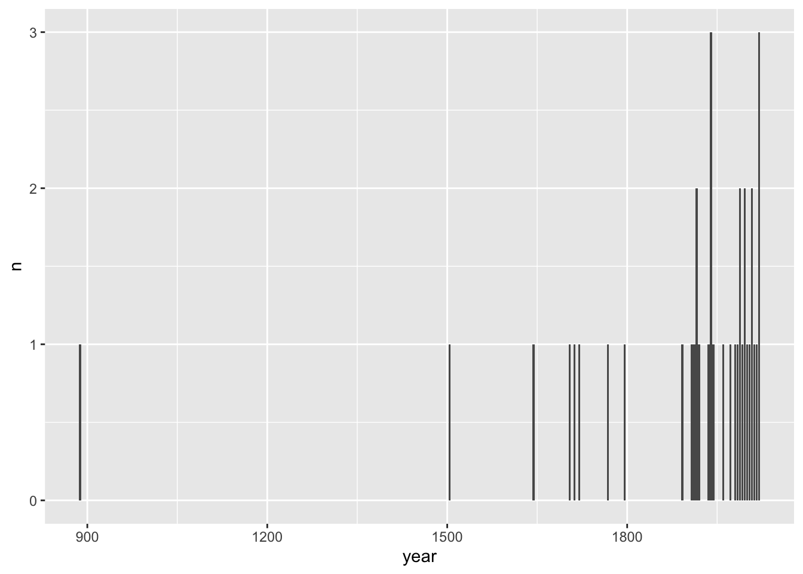

# Option 1: tidytuesdayR package
## install.packages("tidytuesdayR")
## install.packages("waldo")
## install.packages("tidytext")
## install.packages("textdata")
library(tidytuesdayR)
library(tidyverse)
library(waldo)
library(tidytext)
library(textdata)Introduction
The latest TidyTuesday dataset was on births, deaths and other historical events that occurred in leap years, i.e. those years that include 29 February (such as 2024!). Further details are here.
Myriam led the session, and Antony provided additional code for performing text field analysis after the session.
Also, Emu the cat had the following contribution to make:
43e’/;£@@@@@@@@@@.1
The session
We started by loading some packages
We then had two ways of loading the data, in this case three datasets. As usual I’m switching to the url-based approach for the blog post
# tuesdata <- tidytuesdayR::tt_load('2024-02-27')
# ## OR
# tuesdata <- tidytuesdayR::tt_load(2024, week = 9)
# events <- tuesdata$events
# births <- tuesdata$births
# deaths <- tuesdata$deaths
# Option 2: Read directly from GitHub
events <- readr::read_csv('https://raw.githubusercontent.com/rfordatascience/tidytuesday/master/data/2024/2024-02-27/events.csv')
births <- readr::read_csv('https://raw.githubusercontent.com/rfordatascience/tidytuesday/master/data/2024/2024-02-27/births.csv')
deaths <- readr::read_csv('https://raw.githubusercontent.com/rfordatascience/tidytuesday/master/data/2024/2024-02-27/deaths.csv')We noticed the births data include mention of at least one Pope. We wanted to explore more and less robust ways of finding popes in the births and deaths dataset
We could start by just looking for whether the word Pope is in the person field of births
str_detect(births$person, "Pope") [1] TRUE FALSE FALSE FALSE FALSE FALSE FALSE FALSE FALSE FALSE FALSE FALSE
[13] FALSE FALSE FALSE FALSE FALSE FALSE FALSE FALSE FALSE FALSE FALSE FALSE
[25] FALSE FALSE FALSE FALSE FALSE FALSE FALSE FALSE FALSE FALSE FALSE FALSE
[37] FALSE FALSE FALSE FALSE FALSE FALSE FALSE FALSE FALSE FALSE FALSE FALSE
[49] FALSE FALSE FALSE FALSE FALSE FALSE FALSE FALSE FALSE FALSE FALSE FALSE
[61] FALSE FALSE FALSE FALSE FALSE FALSE FALSE FALSE FALSE FALSE FALSE FALSE
[73] FALSE FALSE FALSE FALSE FALSE FALSE FALSE FALSE FALSE FALSE FALSE FALSE
[85] FALSE FALSE FALSE FALSE FALSE FALSE FALSE FALSE FALSE FALSE FALSE FALSE
[97] FALSE FALSE FALSE FALSE FALSE FALSE FALSE FALSE FALSE FALSE FALSE FALSE
[109] FALSE FALSE FALSE FALSE FALSE FALSE FALSE FALSE FALSE FALSE FALSE FALSE
[121] FALSEWe then used a little expression to make the query not case sensitive:
deaths %>% filter(str_detect(person, "(?i)Pope"))# A tibble: 1 × 4
year_death person description year_birth
<dbl> <chr> <chr> <dbl>
1 468 Pope Hilarius <NA> NAAnother approach is to use ignore_case in the regex() function:
deaths %>% filter(str_detect(person, regex("pope", ignore_case = TRUE)))# A tibble: 1 × 4
year_death person description year_birth
<dbl> <chr> <chr> <dbl>
1 468 Pope Hilarius <NA> NAThe only persons with pope in their name appear to be actual popes, not people who just happen to have the letters ‘pope’ in their surname.
Next we looked at number of events by year. We used two tidyverse approaches to producing this, one using group_by and summarise, the other using count.
number_events <- events %>%
group_by(year) %>%
summarise(n= n())
number_events# A tibble: 29 × 2
year n
<dbl> <int>
1 888 1
2 1504 1
3 1644 1
4 1704 1
5 1712 1
6 1720 1
7 1768 1
8 1796 1
9 1892 1
10 1908 1
# ℹ 19 more rowsnumber_events_2 <- events %>%
count(year)
number_events_2# A tibble: 29 × 2
year n
<dbl> <int>
1 888 1
2 1504 1
3 1644 1
4 1704 1
5 1712 1
6 1720 1
7 1768 1
8 1796 1
9 1892 1
10 1908 1
# ℹ 19 more rowsWe then tried different comparator functions to see if they all agreed the contents were identical, with some mixed and confusing results:
waldo::compare(number_events, number_events_2)✔ No differenceswaldo says they are the same.
identical(number_events, number_events_2)[1] FALSEidentical says they are not identical
setequal(number_events, number_events_2)[1] TRUEBut setequal doesn’t find differences
all.equal(number_events, number_events_2)[1] "Attributes: < Names: 1 string mismatch >"
[2] "Attributes: < Length mismatch: comparison on first 2 components >"
[3] "Attributes: < Component \"class\": Lengths (3, 4) differ (string compare on first 3) >"
[4] "Attributes: < Component \"class\": 3 string mismatches >"
[5] "Attributes: < Component 2: Modes: numeric, externalptr >"
[6] "Attributes: < Component 2: Lengths: 29, 1 >"
[7] "Attributes: < Component 2: target is numeric, current is externalptr >" All equal reports a number of differences, related to the attributes (metadata) between the two objects being compared.
Curiouser and Curiouser…
Now let’s plot the number of events over time
number_events %>%
ggplot(aes(x = year, y = n))+
geom_col()
We wanted to know if there was anyone who was both recorded as being born and dying in a leap year:
person_bd <- births %>%
inner_join(deaths, by = "person")
person_bd# A tibble: 1 × 7
year_birth.x person description.x year_death.x year_death.y description.y
<dbl> <chr> <chr> <dbl> <dbl> <chr>
1 1812 James Miln… Scottish-Aus… 1880 1880 Scottish-Aus…
# ℹ 1 more variable: year_birth.y <dbl>One person (born in Scotland!)
We then looked text analysis, and in particular sentiment analysis of the content of the descriptio field:
births %>%
unnest_tokens(word, description) %>%
anti_join(get_stopwords()) %>%
left_join(get_sentiments("afinn"))# A tibble: 432 × 5
year_birth person year_death word value
<dbl> <chr> <dbl> <chr> <dbl>
1 1468 Pope Paul III 1549 <NA> NA
2 1528 Albert V 1579 duke NA
3 1528 Albert V 1579 bavaria NA
4 1528 Domingo Báñez 1604 spanish NA
5 1528 Domingo Báñez 1604 theologian NA
6 1572 Edward Cecil 1638 1st NA
7 1572 Edward Cecil 1638 viscount NA
8 1572 Edward Cecil 1638 wimbledon NA
9 1576 Antonio Neri 1614 florentine NA
10 1576 Antonio Neri 1614 priest NA
# ℹ 422 more rowsevents %>%
unnest_tokens(word, event) %>%
anti_join(get_stopwords()) %>%
left_join(get_sentiments("afinn"))# A tibble: 418 × 3
year word value
<dbl> <chr> <dbl>
1 888 odo NA
2 888 count NA
3 888 paris NA
4 888 crowned NA
5 888 king NA
6 888 west NA
7 888 francia NA
8 888 france NA
9 888 archbishop NA
10 888 walter NA
# ℹ 408 more rowsHere’s the words in the afinn object with the highest (most positive) sentiment
get_sentiments("afinn") %>%
arrange(desc(value)) # A tibble: 2,477 × 2
word value
<chr> <dbl>
1 breathtaking 5
2 hurrah 5
3 outstanding 5
4 superb 5
5 thrilled 5
6 amazing 4
7 awesome 4
8 brilliant 4
9 ecstatic 4
10 euphoric 4
# ℹ 2,467 more rowsAnd here’s an exploration of average sentiment by (leap)year based on the events description field:
events |>
unnest_tokens(word, event) |>
anti_join(get_stopwords()) |>
right_join(get_sentiments("afinn")) |>
group_by(year) |>
summarise(mean_sentiment = mean(value)) |>
ggplot(aes(x = year, y = mean_sentiment)) +
geom_point() +
geom_smooth()Antony’s script
Load libraries
library(tidyverse)
library(lubridate)
library(countrycode)some extra data sets re nationalities
demonym <- readr::read_csv("https://raw.githubusercontent.com/knowitall/chunkedextractor/master/src/main/resources/edu/knowitall/chunkedextractor/demonyms.csv",
col_names = c("demonym","geography"))
demonym$demonym <- tolower(demonym$demonym)
demonym$geography <- tolower(demonym$geography)
country <- tibble(country=countrycode::codelist$country.name.en)Load data
# tuesdata <- tidytuesdayR::tt_load('2024-02-27')
# list2env(tuesdata,.GlobalEnv)
glimpse(events)Rows: 37
Columns: 2
$ year <dbl> 888, 1504, 1644, 1704, 1712, 1720, 1768, 1796, 1892, 1908, 1912,…
$ event <chr> "Odo, count of Paris, is crowned king of West Francia (France) b…glimpse(births)Rows: 121
Columns: 4
$ year_birth <dbl> 1468, 1528, 1528, 1572, 1576, 1640, 1692, 1724, 1736, 1792…
$ person <chr> "Pope Paul III", "Albert V", "Domingo Báñez", "Edward Ceci…
$ description <chr> NA, "Duke of Bavaria", "Spanish theologian", "1st Viscount…
$ year_death <dbl> 1549, 1579, 1604, 1638, 1614, 1704, 1763, 1822, 1784, 1868…glimpse(deaths)Rows: 62
Columns: 4
$ year_death <dbl> 468, 992, 1460, 1528, 1592, 1600, 1604, 1712, 1744, 1792, …
$ person <chr> "Pope Hilarius", "Oswald of Worcester", "Albert III", "Pat…
$ description <chr> NA, "Anglo-Saxon archbishop and saint", "Duke of Bavaria-M…
$ year_birth <dbl> NA, 925, 1401, 1504, 1536, 1529, 1530, 1653, 1683, 1728, 1…Which cohort of leap day births is most represented in Wikipedia’s data?
Are any years surprisingly underrepresented compared to nearby years?
What other patterns can you find in the data?
how many popes?
births %>%
mutate(is_pope = grepl("pope",tolower(paste(person,description)))) %>%
count(is_pope)# A tibble: 2 × 2
is_pope n
<lgl> <int>
1 FALSE 120
2 TRUE 1count births by century —-
getCenturyCorrected <- function(year) {
if (year %% 100 == 0) {
century <- year / 100
} else {
century <- ceiling(year / 100)
}
return(century)
}
getCenturyCorrected(1900)[1] 19getCenturyCorrected(1901)[1] 20births %>%
mutate(century=sapply(year_birth,getCenturyCorrected)) %>%
count(century)# A tibble: 7 × 2
century n
<dbl> <int>
1 15 1
2 16 4
3 17 2
4 18 3
5 19 11
6 20 99
7 21 1do count() and summarise(n=n()) give identical dataframes? Not always —-
x <- births %>% count(year_birth)
y <- births %>% group_by(year_birth) %>% summarise(n=n())
identical(attributes(x), attributes(y))[1] FALSEnames(x)==names(y)[1] TRUE TRUEidentical(
x,
y
)[1] FALSEa rough stab (clearly flawed) at parsing nationality —-
births_nationality <-
bind_rows(
births %>%
tidytext::unnest_tokens(word, description) %>%
anti_join(tidytext::get_stopwords(), "word") %>%
left_join(
demonym,
by = c(word = "geography"),
relationship = "many-to-many"
) %>%
left_join(demonym, by = "demonym"),
births %>%
tidytext::unnest_tokens(word, description) %>%
anti_join(tidytext::get_stopwords(), "word") %>%
left_join(demonym, c(word = "demonym")) %>%
left_join(demonym, "geography", relationship = "many-to-many")
)
births_nationality %>% count(geography) %>% arrange(-n)# A tibble: 35 × 2
geography n
<chr> <int>
1 <NA> 732
2 united states 216
3 australia 40
4 england 39
5 canada 24
6 zealand 12
7 spain 10
8 wales 8
9 france 6
10 turkey 6
# ℹ 25 more rowsNow a pretty wordcloud
events %>%
unnest_tokens(word, event) %>%
anti_join(get_stopwords(),"word") %>%
count(word) %>%
{wordcloud::wordcloud(words = .$word,
freq = .$n, min.freq = 1,
max.words = 20, random.order = FALSE, rot.per = 0.35,
colors = RColorBrewer::brewer.pal(8, "Dark2"))}A neutral word should have a sentiment score of 0, not NA. Let’s make that change…
afinn_sentiments <- get_sentiments('afinn')
events %>%
unnest_tokens(word, event) %>%
anti_join(get_stopwords(),"word") %>%
left_join(afinn_sentiments,"word") %>%
# filter(!is.na(value)) %>%
replace_na(list(value=0)) %>%
mutate(century = sapply(year,getCenturyCorrected)) %>%
group_by(century) %>%
summarise(mean_sentiment = mean(value)) %>%
ggplot(aes(x=century,y=mean_sentiment))+geom_line()Footnotes
I don’t think even regex can help us with this one.↩︎